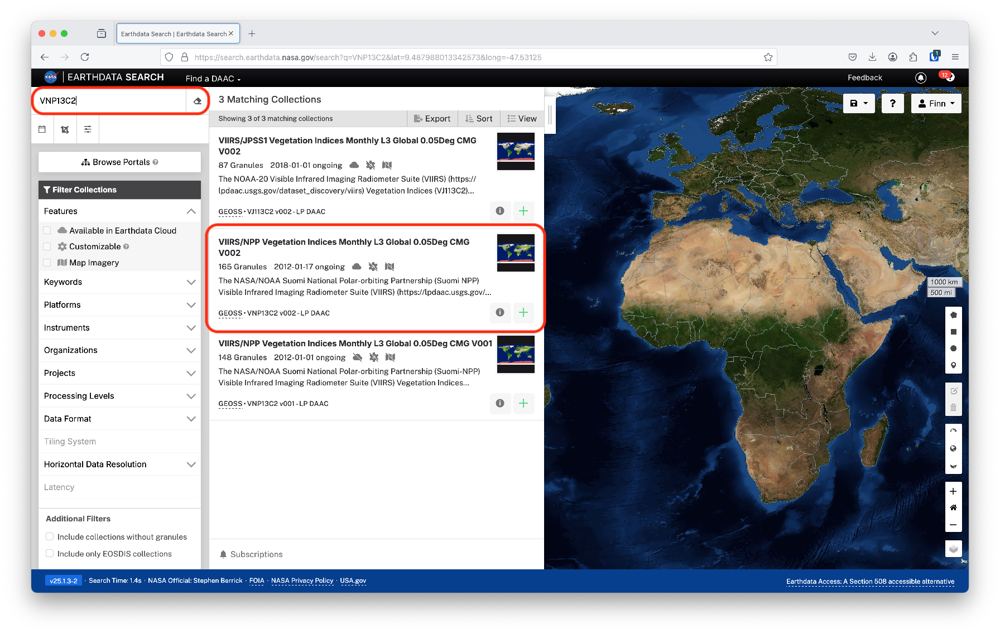
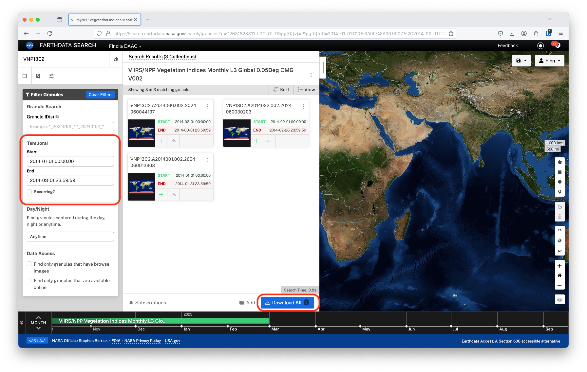
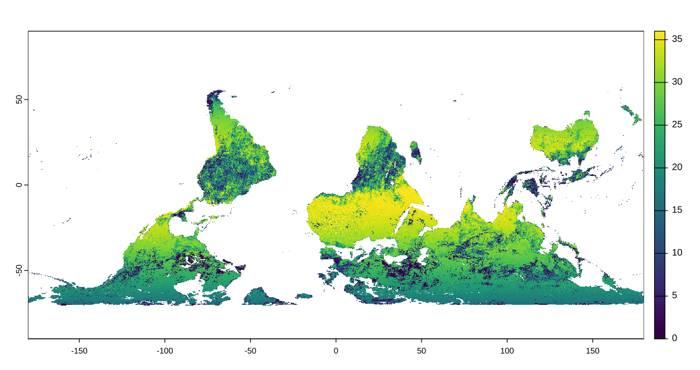
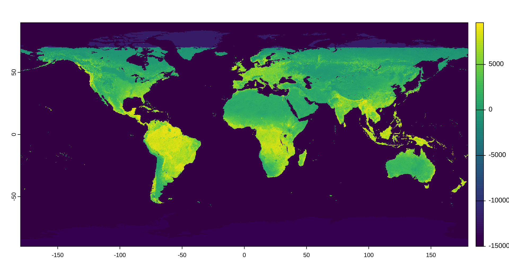
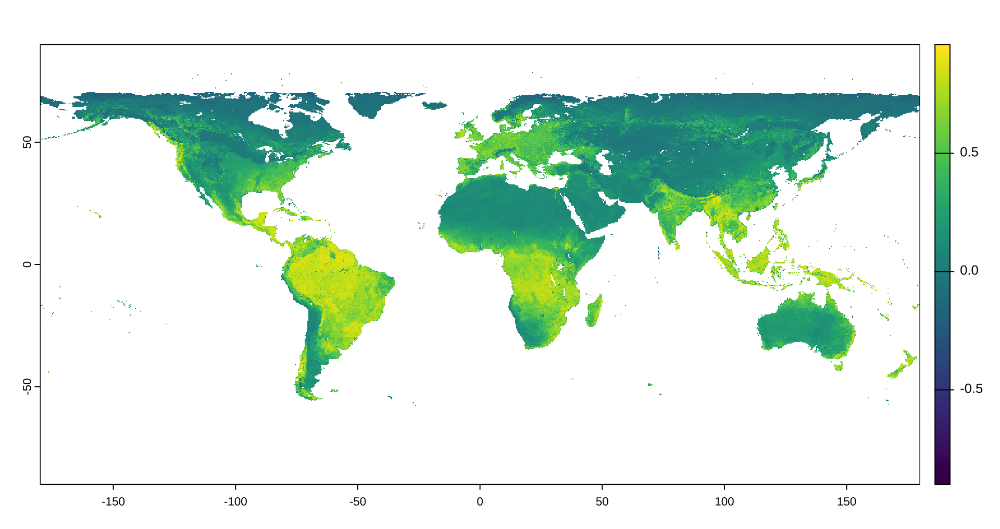
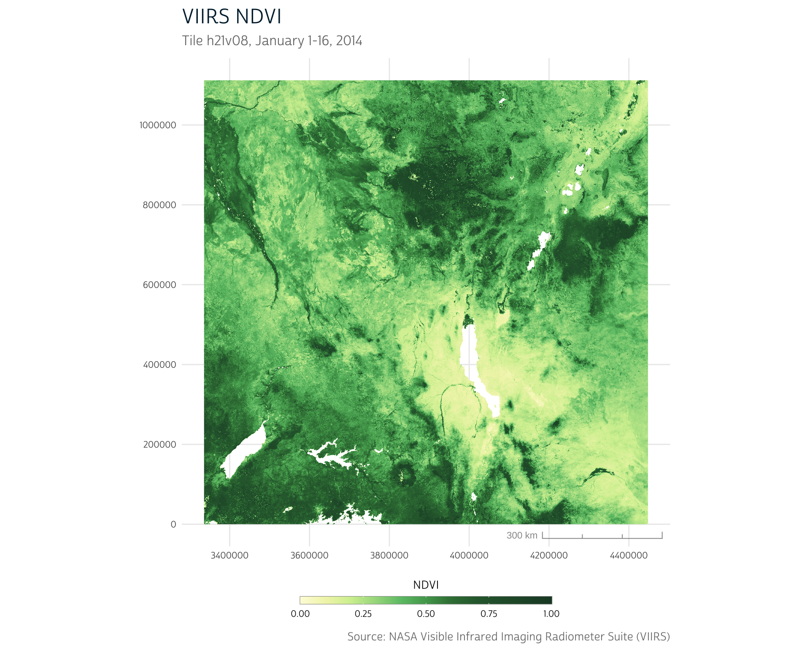
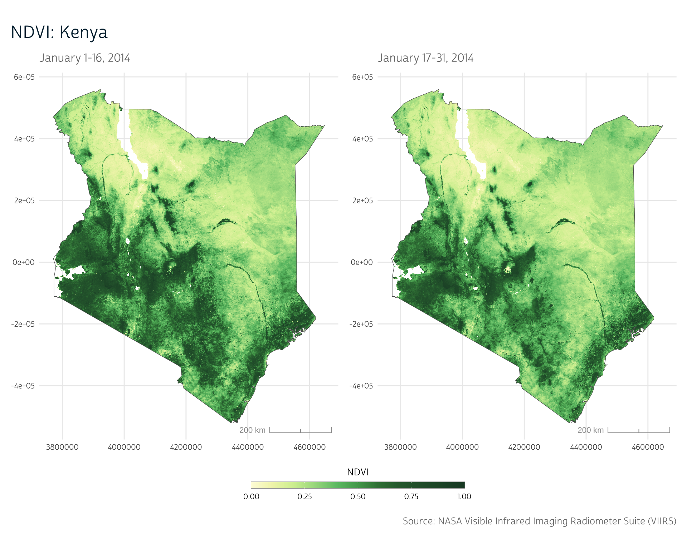

library(stringr)
library(ggplot2)
library(ggspatial)
library(purrr)
library(terra)The Normalized Vegetation Index (NDVI) is a measure that can be used in research involving climate patterns, agriculture, access to green space and much more. We’ve introduced NDVI in a previous post, where we downloaded and prepared NDVI data from MODIS.
MODIS, or the Moderate Resolution Imaging Spectroradiometer, is a global imager on two satellites (Terra and Aqua) that has collected images of Earth’s surface for more than 20 years. While originally designed with the expectation of a 5-year lifespan, MODIS is still operating today. However, as we mentioned previously, both Terra and Aqua are set to be decommissioned. As they drift from their original orbits, their overpass times will increasingly lag, making the data they collect more difficult to compare over time. Terra will continue to collect data until December 2025, while Aqua will remain in orbit until August 2026.
Fortunately, a new imaging instrument has already been launched: the Visible Infrared Imaging Radiometer Suite (VIIRS). In this post, we’ll adapt the workflows we introduced before using MODIS data with a new workflow using VIIRS data.
MODIS vs. VIIRS
Fortunately, given the importance of MODIS in many earth science and observation applications, significant effort has been put into ensuring continuity between MODIS and VIIRS to ease the transition between the two instruments.1,2 Still, there are some differences between the two products.
Perhaps most importantly, of course, is difference in temporal availability between the two. VIIRS data is only available starting in 2012, while MODIS data are available all the way back to early 2000. Thus, if you’re linking environmental data to historical survey records, you may have no choice but to use MODIS data. Fortunately, research suggests that you can use data from the two instruments together if your timeframe of interest overlaps the transition from MODIS to VIIRS.1–3
For use before 2000, you may need to look into the Advanced Very High Resolution Radiometer (AVHRR).
VIIRS and MODIS also have different spectral bands. MODIS has 36 spectral bands ranging from 250m to 1km in resolution, while VIIRS has 22 spectral bands at 375m and 750m. Some, though not all, of the VIIRS spectral bands have higher resolution than their analogous MODIS bands.1 So, while VIIRS does use more current technology and improves upon MODIS in detection and accuracy for certain wavelengths of light, there are specific bands where MODIS provides higher resolution.
Tip
A spectral band refers to a specific range of light wavelengths that are detected by the imaging sensor. The reflectance of the surface in different bands can be used to calculate many remote sensing metrics. NDVI, for instance, is calculated using both the near-infrared band reflectance and the red band reflectance.
Further, while MODIS data was collected both in the morning and in the afternoon, VIIRS only provides afternoon data. This means that diurnal comparisons are not possible using VIIRS, and observations for areas that tend to have cloud cover during the afternoon may be more difficult.
See Román et al. (2024)1 for more detailed technical comparisons between the two instruments. The VIIRS vegetation index technical documentation is also a comprehensive resource for understanding how VIIRS vegetation data is collected and processed.
Obtaining VIIRS NDVI data
You can obtain VIIRS data through NASA’s Earthdata Search interface, just like we previously demonstrated when explaining how to download data from MODIS. All you need to do is update the data collection you search for to identify VIIRS data products rather than MODIS data products.
In our previous post, we used the MOD13Q1 collection—250m resolution data delivered in 16-day increments. In this section, we’ll demonstrate how to obtain coarser global vegetation data from VIIRS.
Why coarse resolution data?
Just like MODIS, VIIRS provides several different spatial and temporal resolution options.
While it may seem obvious that you’d always want to find the highest resolution data available, this isn’t always the case. Particularly when linking environmental data to large-scale surveys as we’ve demonstrated throughout this blog, the limiting factor on our precision is typically the location data available in the survey, not the environmental data. Essentially, because of the inherent uncertainty in our survey locations, the benefit of highly detailed environmental data is lost.
In many cases, NASA will provide data products that have already been aggregated both spatially and temporally. These data are often easier to work with and smaller in size, and the aggregation methods that NASA uses often do a better job of handling data quality issues than we could do when aggregating ourselves.
That being said, there are certainly cases where it’s worthwhile to obtain higher-resolution data. This may be the case if you have a high degree of spatial resolution in the data you’re linking to the environmental metrics, or if you want to aggregate data in a particular way to calculate environmental metrics that NASA doesn’t provide out of the box (see our CHIRTS heatwave post for an example).
The key is that when coarse resolution data are sufficient—as they often are—they’re typically the best option.
VIIRS global data: VNP13C2
In the Earthdata Search interface, the product we’ll use has the code VNP13C2.
VNP is the prefix used for products that use the VIIRS instrument aboard the NPP (as opposed to MOD, which we used for Terra-based MODIS products).
Note
NPP refers to the Suomi National Polar-orbiting Partnership, a satellite launched in 2011 with VIIRS (and other instruments) on board. The newer Joint Polar Satellite System (JPSS-1) also houses VIIRS instruments (with the code VJ1).
We’re using data from 2014 in this demo for consistency with our previous post on MODIS. However, if you’re working with data more recent than 2017, you likely will want to use JPSS-1 VIIRS data.
The 13 component of the collection name is a code that indicates that the collection is a vegetation index.
The spatial resolution is represented by the final 2 digits of the collection code. In this case we’ll use C2, which is the coarsest data available from VIIRS (~5.5 km) and is delivered globally. This and other global data products are provided on the Climate Modeling Grid, or CMG, in which data are in geographic (latitude and longitude) coordinates (this will be important later!).
To find the VNP13C2 product, enter the code in the search bar on the Earthdata Search interface.
You should see a few different collections that pop up. We’ll want to use the latest version of the data. NASA regularly makes improvements and corrections to the data from its instruments, and importantly these changes are retroactively applied to prior years of data. Thus, it’s always advisable to use the latest version of a data product once it’s released. At the time of writing, the latest version is v002, so we’ll select the “VIIRS/NPP Vegetation Indices Monthly L3 Global 0.05Deg CMG V002” collection.

From here, you can follow the instructions we introduced in our previous post (or use the Earthdata Search walk-through available when you launch the website) to narrow down your temporal range of interest. Here, our data are global, but if you were working with a higher resolution dataset, you could also select data for a specific spatial region through this interface as well.
We’ve restricted our data to the first three months of 2014 for demonstration. You can download the data by clicking Download All.

We’ve placed these VNP13C2 files in a data/VNP13C2 directory, which we’ll use for the rest of the post.
Loading VIIRS data into R
As always, we’ll start by loading the packages we’ll use in this demo.
In large part, loading VIIRS data follows the same workflow that we demonstrated for MODIS data. Both data sources are raster data containing the same vegetation indices.
files <- list.files("data/VNP13C2", full.names = TRUE)The file names contain helpful information about the data within. We can see the VIIRS product code (VNP13C2) followed by the file timestamp (e.g., A2014001), which uses the year (2014) followed by the Julian day (001—for January 1st). We also see the version (002) and finally the time that the file was last processed by NASA.
files
#> [1] "data/VNP13C2/VNP13C2.A2014001.002.2024060013808.h5"
#> [2] "data/VNP13C2/VNP13C2.A2014032.002.2024060030203.h5"
#> [3] "data/VNP13C2/VNP13C2.A2014060.002.2024060044137.h5"One key difference is in the file format. While the MODIS files we downloaded previously came in HDF4 format, VIIRS files come in HDF5 (.h5) format. HDF5 files are supported by {terra}, but they store their metadata in different ways, which are not always detected automatically.
For instance, if we load a few sample VIIRS files that we downloaded as described above, we notice that we get a warning when attempting to load with rast():
viirs_cmg <- rast(files)
#> Warning: [rast] unknown extentThis warning is alerting us to the fact that while we were able to load the file into a SpatRaster object, we’re missing information about the spatial extent of the data we’ve loaded.
We can check the extent information with ext():
ext(viirs_cmg)
#> SpatExtent : 0, 7200, 0, 3600 (xmin, xmax, ymin, ymax)Why do we have extent information stored when terra warned us that it couldn’t identify the extent? This is because the extent that’s used in the absence of geographical information is simply in pixel units. That is, our raster is 7200x3600 pixels.
Unfortunately, this doesn’t tell us anything about the geographic locations that the data correspond to. That is, the data aren’t georeferenced.
Accordingly, we’ll notice that our data are also missing a coordinate reference system:
crs(viirs_cmg)
#> [1] ""So, terra was able to load the raster values, but we don’t know any of the critical geographical information associated with these data. Apparently terra isn’t able to access it in these files!
Note
While these metadata aren’t loaded automatically at the time of writing, it’s possible that future updates to these files, {terra} or other R packages may make it possible to do so, and you may not need to manually fix the raster metadata after loading as we demonstrate below.
Fixing raster metadata
As stated in the VIIRS Vegetation Index Product Guide, the VIIRS CMG data are provided in WGS84 geographic coordinates (that is, latitude and longitude) for the entire globe.
We could use this knowledge to provide the missing extent and CRS information ourselves. We know that the global extent should span from -180° to 180° in longitude and -90° to 90° in latitude, so we can easily set the extent using terra’s ext():
# Note that `ext()` expects coordinates in (xmin, xmax, ymin, ymax) order
ext(viirs_cmg) <- c(-180, 180, -90, 90)Similarly, we could provide the EPSG code for WGS84 using terra’s crs():
crs(viirs_cmg) <- "epsg:4326"Unfortunately, if we go ahead and plot our data, we notice something a bit unexpected:
plot(viirs_cmg[[1]])
As it turns out, because of the lack of geographic metadata, the file was flagged as “flipped” by GDAL (the spatial translation library used by terra), so terra flipped the file vertically. When loading our raster, we can set noflip = TRUE to ensure our data are loaded in the correct orientation.
You may also have noticed that the range of values in the plot above doesn’t correspond to what we’d expect from NDVI (which should range from -1 to 1). This is because our input file actually contains several measures (“subdatasets”) in addition to NDVI, and we’ve only shown the first. We can use the subds argument to select a particular subdataset from the HDF5 file. (Later, we’ll show how you can use the metadata to find the correct subdataset name.)
Making these adjustments, we get:
viirs_cmg <- rast(
files,
subds = "//HDFEOS/GRIDS/VIIRS_Grid_monthly_VI_CMG/Data_Fields/CMG_0.05_Deg_monthly_NDVI",
noflip = TRUE
)
# Don't forget to attach geographic info as we've re-loaded the file!
ext(viirs_cmg) <- c(-180, 180, -90, 90)
crs(viirs_cmg) <- "epsg:4326"We now have a georeferenced NDVI raster dataset for 3 months:
viirs_cmg
#> class : SpatRaster
#> dimensions : 3600, 7200, 3 (nrow, ncol, nlyr)
#> resolution : 0.05, 0.05 (x, y)
#> extent : -180, 180, -90, 90 (xmin, xmax, ymin, ymax)
#> coord. ref. : lon/lat WGS 84 (EPSG:4326)
#> sources : VNP13C2.A2014001.002.2024060013808.h5://CMG_0.05_Deg_monthly_NDVI
#> VNP13C2.A2014032.002.2024060030203.h5://CMG_0.05_Deg_monthly_NDVI
#> VNP13C2.A2014060.002.2024060044137.h5://CMG_0.05_Deg_monthly_NDVI
#> varnames : CMG_0
#> CMG_0
#> CMG_0
#> names : CMG_0.05_D~nthly_NDVI, CMG_0.05_D~nthly_NDVI, CMG_0.05_D~nthly_NDVIA quick map of our data shows that it’s now oriented correctly:
plot(viirs_cmg[[1]])
However, our NDVI units still appear to be off—we’d expect them to range from -1 to 1, but here we see they appear to be scaled. The VIIRS documentation indicates that the values have been scaled by 10000 and that the valid range of data is from -10000 to 10000.
We’ll rescale our data with simple division:
# Rescale data
viirs_cmg <- viirs_cmg / 10000Then, we’ll use classify() to convert all raster values below -1 to missing values. classify() expects a matrix that contains an input range (in this case, -Inf to -1) and an output value that should be used as a replacement for values in that range (in this case, NA).
# Reclassify out-of-range data to NA
m <- matrix(c(-Inf, -1, NA), nrow = 1)
viirs_cmg <- classify(viirs_cmg, m)This looks much better:
plot(viirs_cmg[[1]])
At this point, we could load spatial boundary files for a particular region to crop our data and proceed with our analysis. We’ve covered this kind of process previously, so we won’t demonstrate again here. As is often the case, the bulk of the work when introducing a new data product is figuring out how to get it loaded and prepared correctly.
Working with other VIIRS data products
So far we’ve been working with global, coarse-resolution data. In our previous MODIS post, we instead showed how to access higher-resolution data for a particular region of interest.
As a more direct analog to our previous workflow, we’ll quickly demonstrate how that process can be updated for use with VIIRS HDF5 files. This will also give us a chance to show you how you can access HDF5 file metadata to help identify subdatasets and geographic information for a file.
HDF5 metadata
In general, the process for loading and working with higher-resolution files mirrors the process we demonstrated above. However, instead of downloading global data, we’ll download data for a collection of tiles of data in our area of interest.
Tip
We showed you how to use Earthdata Search to download data on a tile-by-tile basis in our MODIS post. The only difference here is that we’ve downloaded data for the VNP13A1 product, not the MOD13Q1 product.
There are two key differences when working with VNP13A1 as compared to the global VNP13C2 data described above.
- First, NASA uses a sinusoidal projection for its high resolution products, not the geographic coordinates used for the global CMG product.
- Second, because we will be stitching together multiple tiles of data, each will have a different geographic extent.
To deal with these additional complexities, we’ll need to access the file metadata directly to attempt to identify the correct CRS and extent information.
Bioconductor and the rhdf5 package
First, we’ll load a collection of 8 HDF files that cover 2 timestamps for the same 4 tiles that we used in our MODIS post. We’ve placed them in a data/VNP13A1 directory.
files <- list.files("data/VNP13A1", full.names = TRUE)Unfortunately, terra isn’t designed to provide flexible access to metadata for HDF5 files. However, there is another R package that can help, appropriately named {rhdf5}.
rhdf5 is a package from Bioconductor, an open-source software project focused on building bioinformatics tools. You’re probably familiar with installing packages from CRAN, which is the default behavior when using install.packages(), but Bioconductor packages are not stored on CRAN.
Fortunately, Bioconductor maintains the {BiocManager} package to help install Bioconductor packages. If you’ve never worked with a Bioconductor package before, you can install the manager with
install.packages("BiocManager")Then, you can use it to install rhdf5:
BiocManager::install("rhdf5")Note that you’ll only need to do this once, unless you later need to update the BiocManager or rhdf5 packages.
Accessing metadata
First, we’ll load the {rhdf5} package:
library(rhdf5)We can view the available data and metadata fields in an HDF5 file with h5ls().
ds <- h5ls(files[1])HDF5 files are organized into groups. Groups refer to an abstract collection of objects, like datasets or metadata objects. Each data object has a name. You can think of each group as a directory and the objects inside as different files within that directory.
For instance, if we view this file’s groups, we notice that there are several entries in the Data Fields group, among others:
ds$group
#> [1] "/"
#> [2] "/HDFEOS"
#> [3] "/HDFEOS/ADDITIONAL"
#> [4] "/HDFEOS"
#> [5] "/HDFEOS/GRIDS"
#> [6] "/HDFEOS/GRIDS/VIIRS_Grid_16Day_VI_500m"
#> [7] "/HDFEOS/GRIDS/VIIRS_Grid_16Day_VI_500m/Data Fields"
#> [8] "/HDFEOS/GRIDS/VIIRS_Grid_16Day_VI_500m/Data Fields"
#> [9] "/HDFEOS/GRIDS/VIIRS_Grid_16Day_VI_500m/Data Fields"
#> [10] "/HDFEOS/GRIDS/VIIRS_Grid_16Day_VI_500m/Data Fields"
#> [11] "/HDFEOS/GRIDS/VIIRS_Grid_16Day_VI_500m/Data Fields"
#> [12] "/HDFEOS/GRIDS/VIIRS_Grid_16Day_VI_500m/Data Fields"
#> [13] "/HDFEOS/GRIDS/VIIRS_Grid_16Day_VI_500m/Data Fields"
#> [14] "/HDFEOS/GRIDS/VIIRS_Grid_16Day_VI_500m/Data Fields"
#> [15] "/HDFEOS/GRIDS/VIIRS_Grid_16Day_VI_500m/Data Fields"
#> [16] "/HDFEOS/GRIDS/VIIRS_Grid_16Day_VI_500m/Data Fields"
#> [17] "/HDFEOS/GRIDS/VIIRS_Grid_16Day_VI_500m/Data Fields"
#> [18] "/HDFEOS/GRIDS/VIIRS_Grid_16Day_VI_500m/Data Fields"
#> [19] "/HDFEOS/GRIDS/VIIRS_Grid_16Day_VI_500m/Data Fields"
#> [20] "/HDFEOS/GRIDS/VIIRS_Grid_16Day_VI_500m/Data Fields"
#> [21] "/HDFEOS/GRIDS/VIIRS_Grid_16Day_VI_500m/Data Fields"
#> [22] "/HDFEOS/GRIDS/VIIRS_Grid_16Day_VI_500m/Data Fields"
#> [23] "/HDFEOS/GRIDS/VIIRS_Grid_16Day_VI_500m/Data Fields"
#> [24] "/HDFEOS/GRIDS/VIIRS_Grid_16Day_VI_500m"
#> [25] "/HDFEOS/GRIDS/VIIRS_Grid_16Day_VI_500m"
#> [26] "/"
#> [27] "/HDFEOS INFORMATION"
#> [28] "/HDFEOS INFORMATION"
#> [29] "/HDFEOS INFORMATION"If we look at the specific objects within these groups, we see that each of these data fields is a different metric (e.g. EVI [Enhanced Vegetation Index], NDVI, etc.):
paste(ds$group, ds$name, sep = "/")
#> [1] "//HDFEOS"
#> [2] "/HDFEOS/ADDITIONAL"
#> [3] "/HDFEOS/ADDITIONAL/FILE_ATTRIBUTES"
#> [4] "/HDFEOS/GRIDS"
#> [5] "/HDFEOS/GRIDS/VIIRS_Grid_16Day_VI_500m"
#> [6] "/HDFEOS/GRIDS/VIIRS_Grid_16Day_VI_500m/Data Fields"
#> [7] "/HDFEOS/GRIDS/VIIRS_Grid_16Day_VI_500m/Data Fields/500 m 16 days EVI"
#> [8] "/HDFEOS/GRIDS/VIIRS_Grid_16Day_VI_500m/Data Fields/500 m 16 days EVI2"
#> [9] "/HDFEOS/GRIDS/VIIRS_Grid_16Day_VI_500m/Data Fields/500 m 16 days NDVI"
#> [10] "/HDFEOS/GRIDS/VIIRS_Grid_16Day_VI_500m/Data Fields/500 m 16 days NIR reflectance"
#> [11] "/HDFEOS/GRIDS/VIIRS_Grid_16Day_VI_500m/Data Fields/500 m 16 days SWIR1 reflectance"
#> [12] "/HDFEOS/GRIDS/VIIRS_Grid_16Day_VI_500m/Data Fields/500 m 16 days SWIR2 reflectance"
#> [13] "/HDFEOS/GRIDS/VIIRS_Grid_16Day_VI_500m/Data Fields/500 m 16 days SWIR3 reflectance"
#> [14] "/HDFEOS/GRIDS/VIIRS_Grid_16Day_VI_500m/Data Fields/500 m 16 days VI Quality"
#> [15] "/HDFEOS/GRIDS/VIIRS_Grid_16Day_VI_500m/Data Fields/500 m 16 days blue reflectance"
#> [16] "/HDFEOS/GRIDS/VIIRS_Grid_16Day_VI_500m/Data Fields/500 m 16 days composite day of the year"
#> [17] "/HDFEOS/GRIDS/VIIRS_Grid_16Day_VI_500m/Data Fields/500 m 16 days green reflectance"
#> [18] "/HDFEOS/GRIDS/VIIRS_Grid_16Day_VI_500m/Data Fields/500 m 16 days pixel reliability"
#> [19] "/HDFEOS/GRIDS/VIIRS_Grid_16Day_VI_500m/Data Fields/500 m 16 days red reflectance"
#> [20] "/HDFEOS/GRIDS/VIIRS_Grid_16Day_VI_500m/Data Fields/500 m 16 days relative azimuth angle"
#> [21] "/HDFEOS/GRIDS/VIIRS_Grid_16Day_VI_500m/Data Fields/500 m 16 days sun zenith angle"
#> [22] "/HDFEOS/GRIDS/VIIRS_Grid_16Day_VI_500m/Data Fields/500 m 16 days view zenith angle"
#> [23] "/HDFEOS/GRIDS/VIIRS_Grid_16Day_VI_500m/Data Fields/Projection"
#> [24] "/HDFEOS/GRIDS/VIIRS_Grid_16Day_VI_500m/XDim"
#> [25] "/HDFEOS/GRIDS/VIIRS_Grid_16Day_VI_500m/YDim"
#> [26] "//HDFEOS INFORMATION"
#> [27] "/HDFEOS INFORMATION/ArchiveMetadata.0"
#> [28] "/HDFEOS INFORMATION/CoreMetadata.0"
#> [29] "/HDFEOS INFORMATION/StructMetadata.0"Of particular interest is the "500 m 16 days NDVI" data field, which contains the NDVI data we’ll eventually want to load.
Also of note is the "/HDFEOS INFORMATION/StructMetadata.0" object. By convention, this is where NASA stores some of the key geographic metadata for the file.
We can read the HDF5 metadata using h5read(). The name argument should be set to one of the group and name values from the h5ls() output above.
metadata <- h5read(files[1], name = "//HDFEOS INFORMATION/StructMetadata.0")You can use cat() to display the metadata text in the R console, making it a bit easier to read.
cat(metadata)
#> GROUP=SwathStructure
#> END_GROUP=SwathStructure
#> GROUP=GridStructure
#> GROUP=GRID_1
#> GridName="VIIRS_Grid_16Day_VI_500m"
#> XDim=2400
#> YDim=2400
#> UpperLeftPointMtrs=(3335851.559000,1111950.519667)
#> LowerRightMtrs=(4447802.078667,0.000000)
#> Projection=HE5_GCTP_SNSOID
#> ProjParams=(6371007.181000,0,0,0,0,0,0,0,0,0,0,0,0)
#> SphereCode=-1
#> GROUP=Dimension
#> OBJECT=Dimension_1
#> DimensionName="dimofone"
....Projection metadata
Notice the Projection and ProjParams rows in the output above. These show details about the projection and projection parameters for our data. On their own, they’re hard to interpret, but a quick look at the VIIRS documentation reveals that this is the NASA code for the sinusoidal projection.
We can use a PROJ-string to represent this projection. This will allow us to assign the appropriate projection when we later load our data.
PROJ is a set of software tools that support transformations between coordinate reference systems. PROJ-strings are one way to represent the parameters of a specific projection in a way that PROJ can interpret.
For the sinusoidal projection, we can use the following:
sinu_proj <- "+proj=sinu +lon_0=0 +x_0=0 +y_0=0 +R=6371007.181 +units=m +no_defs"
Note
Note that this is the projection that NASA uses for all its tiled VIIRS (and MODIS) products. Even if you’re working with a different tile, you can use the same projection string to set the CRS of the raster you’re working with.
Extent metadata
The UpperLeftPointMtrs and LowerRightMtrs metadata rows show the locations of the upper left and lower right points of the raster grid in the sinusoidal projection.
....
#> UpperLeftPointMtrs=(3335851.559000,1111950.519667)
#> LowerRightMtrs=(4447802.078667,0.000000)
....From these, we can determine the extent of our raster grid. To simplify things, we’ll just hard-code these points in this demo:
You could also use regular expressions to extract the numeric values themselves. We use this approach in our iterative workflow later in the post.
ul <- c(3335851.559, 1111950.519667)
lr <- c(4447802.078667, 0){terra} expects the extent to be in (xmin, xmax, ymin, ymax) order. In our case, this corresponds to (upper-left x-coordinate, lower-right x-coordinate, lower-right y-coordinate, upper-left y-coordinate).
We’ll use terra’s ext() to create a SpatExtent object containing the extent:
# Using (xmin, xmax, ymin, ymax) order
extent <- ext(ul[1], lr[1], lr[2], ul[2])
extent
#> SpatExtent : 3335851.559, 4447802.078667, 0, 1111950.519667 (xmin, xmax, ymin, ymax)
Note
Note that when working with multiple tiles, you’ll need to get the extent information individually for each tile, as each tile contains data for a different geographic area.
We’ll show one way to deal with this below, where we update the iterative workflow we demonstrated in our MODIS post to work with VIIRS files.
Using metadata
We can use the metadata we’ve explored to improve our data loading workflow and attach correct geographic information to the loaded data.
First, we’ll use the NDVI subdataset name we identified above to load just the NDVI raster, ignoring other bands:
viirs_ndvi <- rast(
files[1],
subds = "//HDFEOS/GRIDS/VIIRS_Grid_16Day_VI_500m/Data_Fields/500_m_16_days_NDVI",
noflip = TRUE
)Now, we can assign our sinusoidal projection to our data:
crs(viirs_ndvi) <- sinu_projAs well as the extent we created above:
ext(viirs_ndvi) <- extentFinally, we’ll make the scale adjustments that we introduced when working with the global CMG data:
# Rescale NDVI values
viirs_ndvi <- viirs_ndvi / 10000
# Replace out-of-range values with NA
m <- matrix(c(-Inf, -1, NA), nrow = 1)
viirs_ndvi <- classify(viirs_ndvi, m)Now we can see that our raster seems to have the appropriate CRS, extent, and scale!
viirs_ndvi
#> class : SpatRaster
#> dimensions : 2400, 2400, 1 (nrow, ncol, nlyr)
#> resolution : 463.3127, 463.3127 (x, y)
#> extent : 3335852, 4447802, 0, 1111951 (xmin, xmax, ymin, ymax)
#> coord. ref. : +proj=sinu +lon_0=0 +x_0=0 +y_0=0 +R=6371007.181 +units=m +no_defs
#> source(s) : memory
#> varname : 500_m_16_days_NDVI
#> name : 500_m_16_days_NDVI
#> min value : -0.9688
#> max value : 0.9994Show plot code
ndvi_pal <- list(
pal = c(
"#fdfbdc",
"#f1f4b7",
"#d3ef9f",
"#a5da8d",
"#6cc275",
"#51a55b",
"#397e43",
"#2d673a",
"#1d472e"
),
values = c(0, 0.1, 0.2, 0.3, 0.4, 0.5, 0.6, 0.7, 1)
)
ggplot() +
layer_spatial(viirs_ndvi) +
coord_sf(datum = sf::st_crs(viirs_ndvi)) +
scale_fill_gradientn(
colors = ndvi_pal$pal,
values = ndvi_pal$values,
limits = c(0, 1),
na.value = "transparent"
) +
labs(
title = "VIIRS NDVI",
subtitle = "Tile h21v08, January 1-16, 2014",
fill = "NDVI",
caption = "Source: NASA Visible Infrared Imaging Radiometer Suite (VIIRS)"
) +
theme_dhs_map() +
theme_dhs_base()
An iterative workflow for multiple tiles
In our MODIS post, we demonstrated a way to load and process multiple tiles of data using {purrr} and {terra}.
For the most part, this workflow can be directly applied to VIIRS files. The primary difference is that each of the tiles will have a different geographic extent. Our workflow therefore will need to correctly identify and assign the extent on a per-tile basis.
Certainly, you could reproduce the process we just introduced for a single file to manually update extent and projection information for multiple files. But if you’re working with many tiles or time points, it may be worthwhile to automate the data loading process.
We’ll reproduce an analogous workflow to the one we introduced for MODIS tiles here.
Note
Because this workflow tracks closely with the workflow we’ve shown previously, we won’t spend a lot of time discussing the details of our code in this section. We’ve included it primarily to serve as a reference for how the transition from MODIS to VIIRS may affect the approach we’ve previously shown.
In many cases, global CMG data may be more appropriate, and you can avoid needing to load data from multiple tiles.
Identify tile codes
As we demonstrated last time, we’ll identify each unique tile code from our file names:
tile_codes <- unique(str_extract(files, "h[0-9]{2}v[0-9]{2}"))
tile_codes
#> [1] "h21v08" "h21v09" "h22v08" "h22v09"This allows us to group our files by tile into a list:
tiles <- map(
tile_codes,
function(code) files[str_detect(files, code)]
)
tiles
#> [[1]]
#> [1] "data/VNP13A1/VNP13A1.A2014001.h21v08.002.2024059234751.h5"
#> [2] "data/VNP13A1/VNP13A1.A2014017.h21v08.002.2024060002117.h5"
#>
#> [[2]]
#> [1] "data/VNP13A1/VNP13A1.A2014001.h21v09.002.2024059234749.h5"
#> [2] "data/VNP13A1/VNP13A1.A2014017.h21v09.002.2024060002133.h5"
#>
#> [[3]]
#> [1] "data/VNP13A1/VNP13A1.A2014001.h22v08.002.2024059234752.h5"
#> [2] "data/VNP13A1/VNP13A1.A2014017.h22v08.002.2024060002157.h5"
#>
#> [[4]]
#> [1] "data/VNP13A1/VNP13A1.A2014001.h22v09.002.2024059234755.h5"
#> [2] "data/VNP13A1/VNP13A1.A2014017.h22v09.002.2024060002123.h5"Using string matching to identify tile extent coordinates
Now, for each of these tiles, we can extract the metadata for the first file using h5read(). (Recall that the two files in each group are differentiated by their timestamps, but share the same geographic extent.)
tile_metadata <- map(
tiles,
function(t) h5read(t[1], name = "//HDFEOS INFORMATION/StructMetadata.0")
)The metadata are in string format. To extract the upper left and lower right coordinates, we’ll need to use regular expressions to pull out the text coordinates and convert to numeric values.
ul <- map(
tile_metadata,
~ str_match(.x, "UpperLeftPointMtrs=\\((.*?)\\)")[, 2]
)
ul <- map(str_split(ul, ","), as.numeric)
ul
#> [[1]]
#> [1] 3335852 1111951
#>
#> [[2]]
#> [1] 3335852 0
#>
#> [[3]]
#> [1] 4447802 1111951
#>
#> [[4]]
#> [1] 4447802 0lr <- map_chr(
tile_metadata,
~ str_match(.x, "LowerRightMtrs=\\((.*?)\\)")[, 2]
)
lr <- map(str_split(lr, ","), as.numeric)
lr
#> [[1]]
#> [1] 4447802 0
#>
#> [[2]]
#> [1] 4447802 -1111951
#>
#> [[3]]
#> [1] 5559753 0
#>
#> [[4]]
#> [1] 5559753 -1111951Now we can convert these points to extents using terra’s conventions. We use map2() to iterate over both sets of points in parallel. That is, we’ll use the first point in the ul list along with the first point in the lr list to construct the first extent, and so on.
tile_ext <- map2(ul, lr, function(u, l) ext(u[1], l[1], l[2], u[2]))
tile_ext
#> [[1]]
#> SpatExtent : 3335851.559, 4447802.078667, 0, 1111950.519667 (xmin, xmax, ymin, ymax)
#>
#> [[2]]
#> SpatExtent : 3335851.559, 4447802.078667, -1111950.519667, 0 (xmin, xmax, ymin, ymax)
#>
#> [[3]]
#> SpatExtent : 4447802.078667, 5559752.598333, 0, 1111950.519667 (xmin, xmax, ymin, ymax)
#>
#> [[4]]
#> SpatExtent : 4447802.078667, 5559752.598333, -1111950.519667, 0 (xmin, xmax, ymin, ymax)Load all tiles
Now, we need to load the data for each tile, updating its CRS and extent information with the corresponding extent for that tile. Since we need to iterate over both tiles and extents, we’ll again use map2(). This will load the first tile and apply the first extent, then the second tile with the second extent, and so on.
viirs_tiles <- map2(
tiles,
tile_ext,
function(tile, ext) {
# Load raster for the input tile. We select the NDVI subdataset
r <- rast(
tile,
subds = "//HDFEOS/GRIDS/VIIRS_Grid_16Day_VI_500m/Data_Fields/500_m_16_days_NDVI",
noflip = TRUE
)
crs(r) <- sinu_proj # Attach sinusoidal projection defined above
ext(r) <- ext # Attach this tile's extent
r # Return the updated raster for this tile
}
)Mosaic georeferenced tiles
As we did in our MODIS post, we’ll now mosaic all the tiles together into a single source:
viirs_mosaic <- reduce(viirs_tiles, mosaic)And take care of the NDVI adjustments we described above.
viirs_mosaic <- viirs_mosaic / 10000
m <- matrix(c(-Inf, -1, NA), nrow = 1)
viirs_mosaic <- classify(viirs_mosaic, m)Show plot code
library(sf)
library(patchwork)
ke_borders <- ipumsr::read_ipums_sf("data/geo_ke1989_2014.zip") |>
st_make_valid() |> # Fix minor border inconsistencies
st_union() |>
st_transform(crs(viirs_mosaic))
ke_viirs <- crop(viirs_mosaic, ke_borders)
ke_viirs_mask <- mask(ke_viirs, vect(ke_borders))
p1 <- ggplot() +
layer_spatial(ke_viirs_mask[[1]]) +
layer_spatial(st_simplify(ke_borders, dTolerance = 1000), fill = NA) +
coord_sf(datum = sf::st_crs(viirs_ndvi)) +
scale_fill_gradientn(
colors = ndvi_pal$pal,
values = ndvi_pal$values,
limits = c(0, 1),
na.value = "transparent"
) +
labs(subtitle = "January 1-16, 2014", fill = "NDVI") +
theme_dhs_map() +
theme_dhs_base()
p2 <- ggplot() +
layer_spatial(ke_viirs_mask[[2]]) +
layer_spatial(st_simplify(ke_borders, dTolerance = 1000), fill = NA) +
coord_sf(datum = sf::st_crs(viirs_ndvi)) +
scale_fill_gradientn(
colors = ndvi_pal$pal,
values = ndvi_pal$values,
limits = c(0, 1),
na.value = "transparent"
) +
labs(subtitle = "January 17-31, 2014", fill = "NDVI") +
theme_dhs_map() +
theme_dhs_base()
p1 + p2 +
plot_layout(guides = "collect", ncol = 2) +
plot_annotation(
title = "NDVI: Kenya",
caption = "Source: NASA Visible Infrared Imaging Radiometer Suite (VIIRS)"
) &
theme(legend.position='bottom')
Fortunately, you can avoid most of this processing when working with global data, as the data have a simpler CRS and are already whole. While you’re likely to want to use global CMG data for most purposes, it’s worthwhile to be aware of some of the quirks required for handling VIIRS files when working with multiple tiles. That being said, resist the temptation to always use high-resolution data! Always assess the spatial resolution of your other data sources to determine when it may be more appropriate to rely on the simpler global VIIRS data.
Getting Help
Questions or comments? Check out the IPUMS User Forum or reach out to IPUMS User Support at ipums@umn.edu.
References
1. Román, M. O., Justice, C., Paynter, I., Boucher, P. B., Devadiga, S., Endsley, A., Erb, A., Friedl, M., Gao, H., Giglio, L., Gray, J. M., Hall, D., Hulley, G., Kimball, J., Knyazikhin, Y., Lyapustin, A., Myneni, R. B., Noojipady, P., Pu, J., … Wolfe, R. (2024). Continuity between NASA MODIS collection 6.1 and VIIRS collection 2 land products. Remote Sensing of Environment, 302, 113963. https://doi.org/10.1016/J.RSE.2023.113963
2. Skakun, S., Justice, C. O., Vermote, E., & Roger, J. C. (2018). Transitioning from MODIS to VIIRS: An analysis of inter-consistency of NDVI data sets for agricultural monitoring. International Journal of Remote Sensing, 39, 971–992. https://doi.org/10.1080/01431161.2017.1395970
3. Li, H., Sun, D., Yu, Y., Wang, H., Liu, Y., Liu, Q., Du, Y., Wang, H., & Cao, B. (2014). Evaluation of the VIIRS and MODIS LST products in an arid area of Northwest China. Remote Sensing of Environment, 142, 111–121. https://doi.org/10.1016/J.RSE.2013.11.014